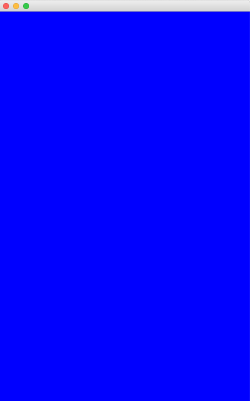

Change the View
drawing and updating
1. The game will have 3 states: MENU, GAME, and END. These are repesented by final int variables that you must create in the GamePanel class. Their names are captialized since their values will not change:
final int MENU = 0;
final int GAME = 1;
final int END = 2;
2. The game will keep track of which state it is in, via an int variable called currentState. Declare and initialize this variable as follows:
int currentState = MENU;
3. Create 3 void methods for updating the game in each state:
updateMenuState() { }
updateGameState() { }
updateEndState() { }
4. Create 3 void methods for drawing the game in each state. Note: these methods need a Graphics parameter because they will draw objects onto the panel's Graphics (like the paintComponent method).
drawMenuState(Graphics g) { }
drawGameState(Graphics g) { }
drawEndState(Graphics g) { }
6. In the paintComponent() method, remove the code that draws a rectangle, and replace it with an if/else block that will check the currentState variable. Call the appropriate draw method inside the if/else block as shown.
if(currentState == MENU){
drawMenuState(g);
}else if(currentState == GAME){
drawGameState(g);
}else if(currentState == END){
drawEndState(g);
}
Note: pass the Graphics object to each draw method.
7. In the drawMenuState() method, fill the game window with a blue rectangle using the following code:
g.setColor(Color.BLUE); g.fillRect(0, 0, LeagueInvaders.WIDTH, LeagueInvaders.HEIGHT);
Similarly, fill the game window with black in the drawGameState() method and red in the drawEndState()method.

TESTING
8. Run the program. The game window should be filled by a blue rectangle.